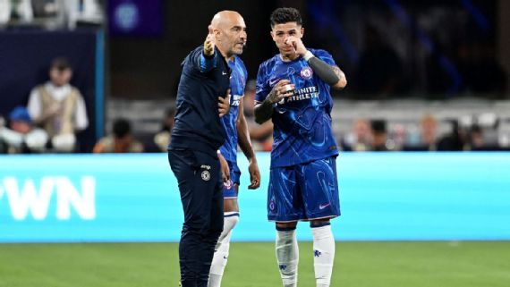

Técnico do Chelsea diz que é 'legal ver jogos do Flamengo' e explica polêmica sobre Mundial ser 'pré-temporada'

Enzo Maresca, técnico do Chelsea, encheu a bola do Flamengo nesta quinta-feira (19), véspera do confronto direto entre as equipes pelo Mundial de Clubes, elogiando a equipe e o treinador Filipe Luís.
O italiano disse que o Rubro-Negro tem ótimos jogadores e se explicou após polêmica de que a competição seria usada como pré-temporada pelo Chelsea.
"Eles são um time muito bom, jogam bom futebol, é legal assisti-los, tem ótimos jogadores. O treinador jogou muitos jogos na Europa, foi jogador, eu conheço ele. Isso é o motivo de estarem invictos no Brasil tanto tempo, são muito organizados. O Brasil é cheio de jogadores técnicos e vamos tentar estar no nosso melhor para ganhar o jogo", afirmou Maresca sobre o Flamengo.
O treinador do Chelsea disse que não trata o Mundial como uma pré-temporada, apesar de, por ser no período das férias europeias, parecer com isso.
"Eu disse na minha entrevista quando cheguei aqui. A sensação é de como se fosse uma pré-temporada, porque terminamos a temporada na Premier League, temos descanso e depois começamos de novo, a sensação é essa. Mas não é pré-temporada, é uma competição de clubes e não estamos aqui para uma pré-temporada. Estamos aqui para dar nosso melhor e tentar ganhar", explicou Maresca.
Chelsea e Flamengo duelam nesta sexta-feira (20), às 15h (de Brasília), no Lincoln Financial Field, na Filadélfia, pela segunda rodada do Grupo D do Mundial.
No horário local, o jogo começará às 14h, e há preocupação com o calor, especialmente do lado do time inglês.
"Essa é a razão [calor] do porquê vamos tentar rotacionar jogadores. Infelizmente para nós, os brasileiros são mais acostumados a jogar nessa temperatura, mas não importa, vamos dar nosso melhor e tentar ganhar", disse o técnico do Chelsea.
Onde assistir ao Mundial de Clubes?
O Mundial de Clubes terá transmissão ao vivo pela CazéTV, disponível sem custo adicional no Disney+
Próximos jogos do Flamengo:
- Chelsea (N): 20/6, 15h (de Brasília) - Mundial de Clubes
- LAFC (N): 24/6, 22h (de Brasília) - Mundial de Clubes